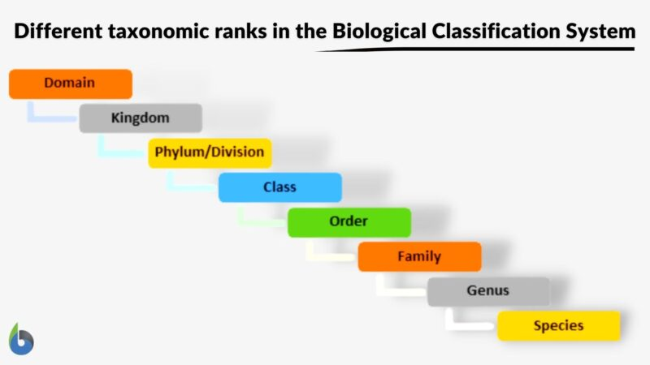

phylum is a taxonomic rank below Kingdom and above
Class in biological classification, especially of animals. In plants,
the corresponding rank is Division. Example: Phylum Chordata includes
Class Mammalia (mammals), Class Aves (birds), Class Ascidiacea (sea
squirts), etc. These animals have notochords at some point in their
life cycle. Etymology: Greek “phylon”, from “phyle”, meaning “tribe”.
Compare: division

Phylum Examples
All living organisms have been placed in 5 major kingdoms according to
Robert Whittaker. They are Monera, Protista, Fungi, Plants, and Animals.
Whether it be plants or animals, the definition of “kingdom” remains the
same, i.e. “a taxonomic rank that is above phylum and below domain”.
Phylum is the 3rd highest classification level according to Carl Woese’s
3-domain classification system and the 2nd highest classification level
according to Whittaker’s 5-kingdom classification system. Each of these
kingdoms encompasses many types of phylum.
Phyla in Kingdom Protista
This is a polyphyletic taxon and the phyla placed under it has a very
unstable position. On an approximate, there are nearly over 15 phyla
in this kingdom, some of which are:
Amoebozoa
Ciliophora
Euglenozoa (previously placed under phylum Thallophyta in Kingdom
Plantae)
Oomycota (previously placed under Kingdom Fungi)
Phyla in Kingdom Fungi
There are 8 different phyla in this kingdom namely:
Ascomycota
Basidiomycota
Blastocladiomycota
Chytridiomycota
Glomeromycota
Microsporidia
Neocallimastigomycota
Zygomycota
Phyla in Kingdom Animalia
Kingdom Animalia constitutes all animals. Amongst the five kingdoms,
the largest kingdom is the animal kingdom. Animals are multicellular eukaryotes.
However, like plants, they do not possess chlorophyll or a cell wall. Therefore,
members of the animal kingdom exhibit a heterotrophic mode of nutrition.